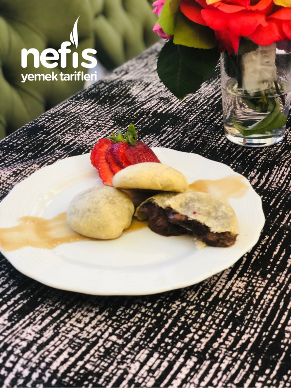

...İzmir Bombası...
İçi patlayacak kadar çikolata dolu ve dışı top şeklinde çikolata sevenleri delirtecek bir bomba:)
Tarifi ve malzemeleri aşağıdadır. Daha ayrıntılı anlatıma video linkinden ulaşabilirsiniz.
Tarif:Ahmet Önder ÖNLÜ

Kaç Kişilik
: 4 kişilik Hazırlama Süresi
: 18 dakika Pişirme Süresi
: 10 dakika
İzmir Bombası İçin Kullanılacak Malzemeler
- 1/2 (yarım) su bardağı ılık su
- 1,5 su bardağı un
- 1/4 (çeyrek) su bardağı sıvı yağ
- 1 yemek kaşığı şeker
- 1 paket vanilya
Peki gelelim bu bomba nasıl yapılıyor:
- Su, sıvı yağ, şeker ve vanilyayı karıştırın.
- Üzerine azar azar unu ilave edip yoğuralım.
- 10 dk dinlendirin hamuru.
- Hamuru ufak parçalara, bezelere, ayırın.
- Her bezeyi incecik açın.
- 1 tatlı kaşığı çikolata ekleyin.
- ve dikkatli bir şekilde kapatın. Leziz oluyor.
- Afiyet olsun 😋.
Video Anlatım